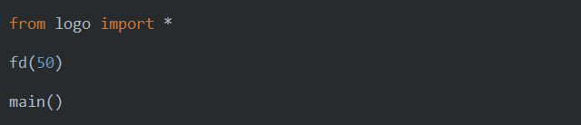
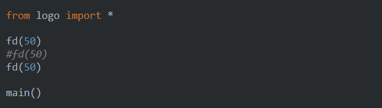
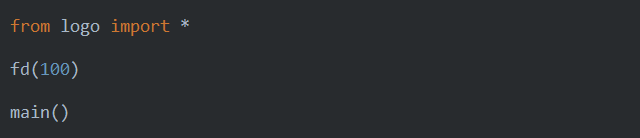

Lesson 2 - logo¶
Setup¶
Install logo module
Usage¶
Type the following program:
The easiest way to run these examples is to reuse the same file and only change the inner part.
Assuming you have the logo module installed and typed the program correctly, you should see the window with the following
contents after pressing Shift+F10:
Copying and pasting¶
Now, use Ctrl+C - Ctrl+V sequence to have fd(50) three times, like below:
If you press Shift+F10, you should the same picture, but the line is three times longer than before:
The reason is that our fd(50) command in fact instructs a virtual robot called ‘turtle’ to walk forward by 50 pixels, drawing the line on the ground (screen) at the same time.
Commenting¶
As you might expect, if we comment one line out, the total length will be two times longer than original:
The output:
The above program is equivalent to the following, where we just tell the turtle to walk by 100 pixels:
